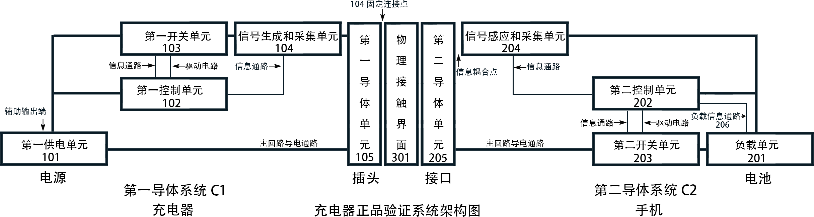
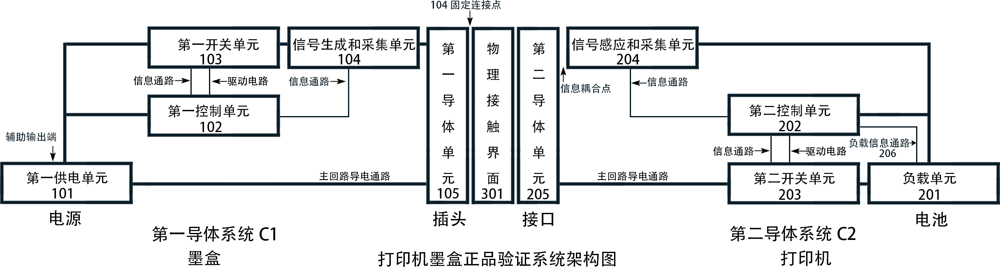

一种基于物理层事件计数的瞬时正品验证防伪白皮书
概要（致手机A公司）：
01. 行业现状与核心痛点分析：被误解的“安全验证”
在当前的智能设备生态中，伪劣充电设备不仅严重侵蚀了官方配件的利润池，更带来了无法估量的电池损坏与火灾隐患。然而，行业现有的解决方案在逻辑与成本上均存在巨大的错位：
痛点一：95% 存量设备的“通信盲区”与高昂的鉴权成本
目前市面上超过 95% 的充电器仅具备基础的供电功能，根本不具备 Wi-Fi、蓝牙等常规无线通信模块。要在这种纯电力传输的线缆上实现防伪鉴权，传统方案（如苹果 MFi 认证）只能强行在插头内植入专用的数字加密芯片。这不仅带来了极高的 BOM（物料）与供应链管理成本，其常规的数字加密握手信号也极易被山寨厂商通过逻辑分析仪“录制并回放”从而低成本破解。
痛点二：“功率协商”不等于“正品验证”的致命漏洞
目前绝大多数手机厂商采用的验证逻辑，本质上是 USB PD、QC 等“快充标准协议”的握手。其验证的核心是“你是否符合我的快充电压/电流输出标准”，而非“你是否是官方授权的正品”。
这种机制的妥协在于：如果协议不匹配，手机往往只是将充电功率“降级”为 5V/1A 的慢充。但只要物理回路导通，伪劣充电器的劣质电流依然在源源不断地涌入手机主板，这完全无法从根本上消除安全隐患。
02. 本方案的颠覆性价值：真伪判定前置与物理级拦截
本专利框架提供了一套无需专用芯片、基于底层 MCU 事件计数的物理层隐式验证协议。我们的核心设计哲学是：正品的防伪鉴权，必须凌驾于任何充电功率协商之上。
零容忍的物理层隔离（0mA 拦截）：
在设备接入的最初 100ms 信号周期内，手机侧将通过物理层的脉冲序列进行瞬时真伪判定。在隐式指令解码成功、确认设备为正品之前，手机侧的底层逻辑控制单元将坚决拒绝闭合充电主回路。如果判定为非正品，一毫安的电流都无法充入手机，从物理层面上彻底掐断伪劣产品的入侵。
兼顾安全与体验的用户弹窗机制（最终裁决权）：
在实现底层物理拦截后，本框架在系统 UI 层保留了极高的产品灵活度。当拦截到非授权设备时，系统可向用户推送安全预警弹窗（例如：“检测到非官方授权充电设备，继续使用可能存在过热或起火风险，是否授权充电？”）。
这种设计将最终的充电选择权（应急需求）交还给用户，不仅规避了强行封杀可能带来的消费者舆论反弹与法律风险，更通过明确的风险提示，完成了品牌免责与安全教育的完美闭环。
技术方案如下：
第一阶段：设计“无法伪造的数字指纹”（前提工作）
A公司首先要问的是：如何防止抄袭？
答案是，我们不依赖一个“固定密码”，而是依赖一个“无法伪造的物理信号指纹”。
1. 设计标准 (方案001：高复杂度脉冲)
我们不使用一个简单的3V脉冲（易被伪造），而是设计一个“脉冲簇指纹”。
例如：在 1ms 的时间内，发送一个 (200µs On) - (100µs Off) - (300µs On) - (100µs Off) - (200µs On) 的复杂组合。
2. 阈值设计 (防火墙)
“阈值”不是一个“电压值”，而是这个“脉冲簇指纹”的完整模板。A公司的手机 (202) 将内置一个“防火墙”，该防火墙会毫秒级地验证感应到的信号是否100%匹配以下所有参数：
• 幅度：3V ± 0.1V
• 脉冲1宽度：200µs ± 5µs
• 间隔1宽度：100µs ± 5µs
...等等（共计 5-10 个参数）
3. 为什么防抄袭？
• 防噪音：自然界的随机毛刺，不可能同时满足上述所有严格的时序和幅度参数。
• 防克隆：抄袭者必须使用昂贵的高速设备来“录制”。但A公司可以在下一次固件更新时，将“正品”的指纹和计数值（例如从 Count=3 改为 Count=5）进行远程更换，所有上一代“录制”的伪劣品将全部失效。
第二阶段：“瞬时验证”慢动作分解（A公司 = Count 3）
以下是用户从插入充电线到手机开始充电的10倍慢放动作分解（总耗时 < 100ms）：
动作 0：物理接触
[用户] 将C1（充电器）插入 C2（手机）。
[C1/C2] 双方（102 / 202）通过电容传感器或 VBUS 电压检测，立刻（~5ms）检测到物理连接已建立。
动作 1：锚定 (隐式握手)
[C1充电器] 检测到接触后，102立刻闭合103，并指令104发送第一个“脉冲指纹”（作为“锚定信号”），并持续10ms。
[C2手机] 204 感应到信号。202 启动“防火墙”对该信号进行比对。
[C2手机] 比对成功！202 确认：“对方是A公司的设备（虽然还不知真伪），信道已建立。”
[C2手机] 202 进入“锚定”状态，它的唯一任务是：“紧盯这个信号，等待它‘脱离’（消失）。”
动作 2：编码开始 (T=0)
[C1充电器] 完成10ms锚定后，102 立刻指令 104 停止（电压变为 0V）。
[C2手机] 202 检测到信号“脱离了预设的稳定状态范围”！
[C2手机] 202 裁定：“信号周期开始 (T=0)！”
[C2手机] 204（传感器）启动10ms硬件计时器。202（控制器）启动20ms确认计时器。
动作 3：编码“正品”内容 (Count = 1, 2, 3)
[C1充电器] 等待 5ms（此间隔 5ms 必须小于 204 的 10ms 超时）。
[C1充电器] 再次发送“脉冲指纹”。
[C2手机] 204/202 检测到信号恢复，立刻复位 10ms/20ms 计时器。202 启动“防火墙”... 验证成功！“计数器 +1” (Count=1)。
...
[C1充电器] C1迅速重复此过程（停止 -> 等待 5ms -> 发送指纹）。
[C2手机] C2 再次复位计时器... 验证成功！“计数器 +1” (Count=2)。
...
[C1充电器] C1 第三次重复此过程。
[C2手机] C2 第三次复位计时器... 验证成功！“计数器 +1” (Count=3)。
动作 4：编码结束 (长静默)
[C1充电器] A公司的“正品”暗号 Count=3 已发送完毕。102最后一次指令104停止，并且不再动作（保持静默）。
[C2手机] 204/202最后一次启动 10ms/20ms 计时器...
动作 5：最终裁决与执行 (总耗时 < 100ms)
时间流逝... C1 保持静默...
... 10ms 后 ...
[C2手机] 204的10ms计时器超时（因C1没再发送信号来复位它）。204 停止工作并向202发送“硬件终止确认”。
... 20ms 后 ...
[C2手机] 202的20ms计时器超时。202 裁决：“我已超时，且已收到 204 的确认。” -> “信号周期确定性结束！”
[C2手机] 202读取计数器最终值：3。
[C2手机] 202匹配指令库：Count=3 -> “A公司正品”。
[C2手机] 202 立刻指令203开关闭合。
[用户视角] 用户插入数据线（0ms），在80ms内，他的手机屏幕亮起，显示充电中。他完全感知不到这背后发生的、包含 4 次“指纹识别”和 7 次“计时器握手”的复杂验证流程。
系统架构图

